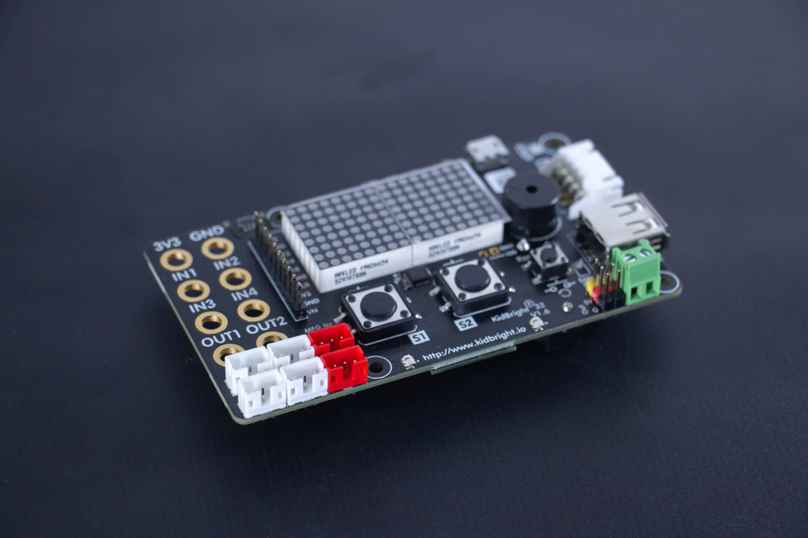
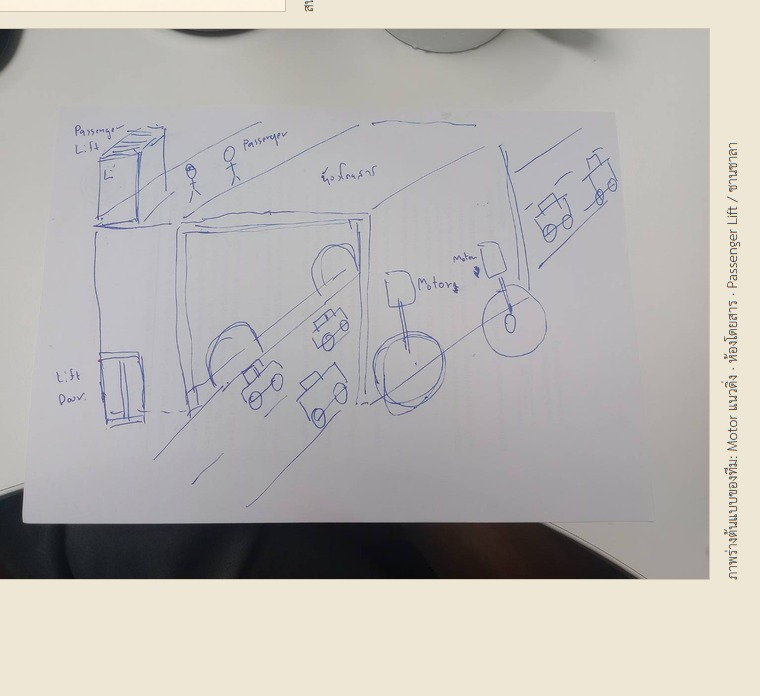
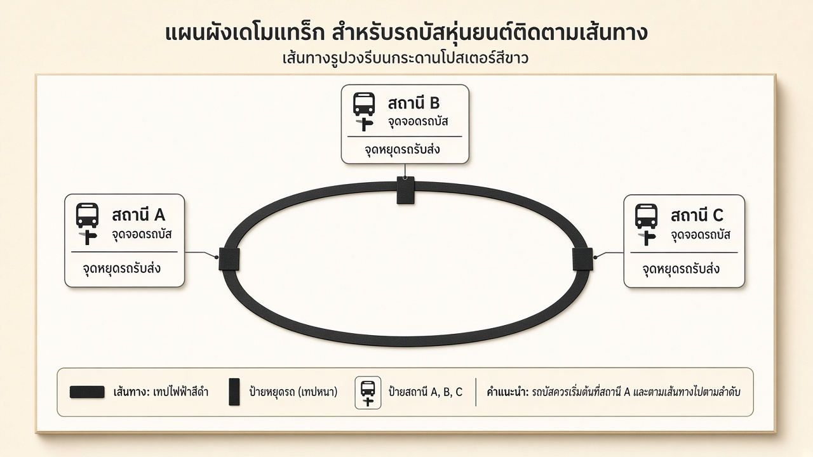
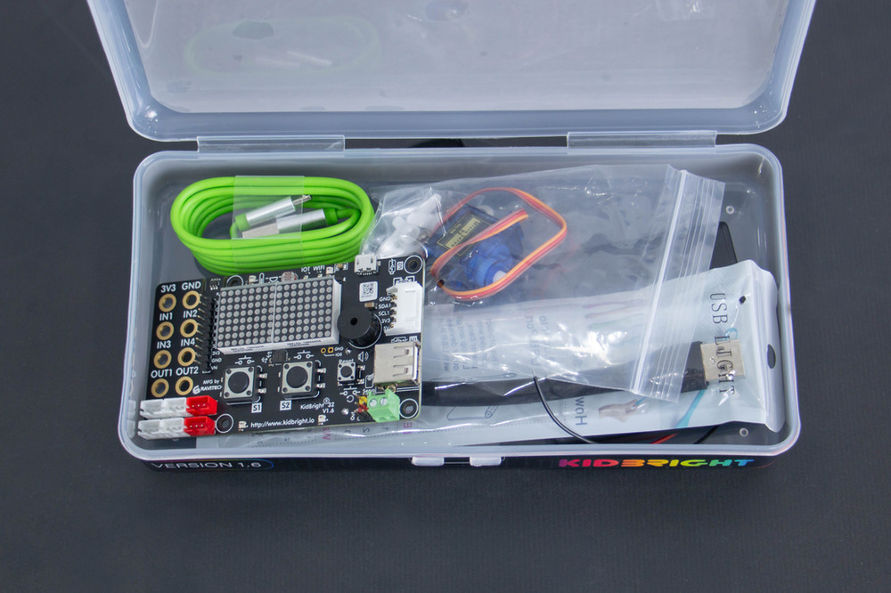
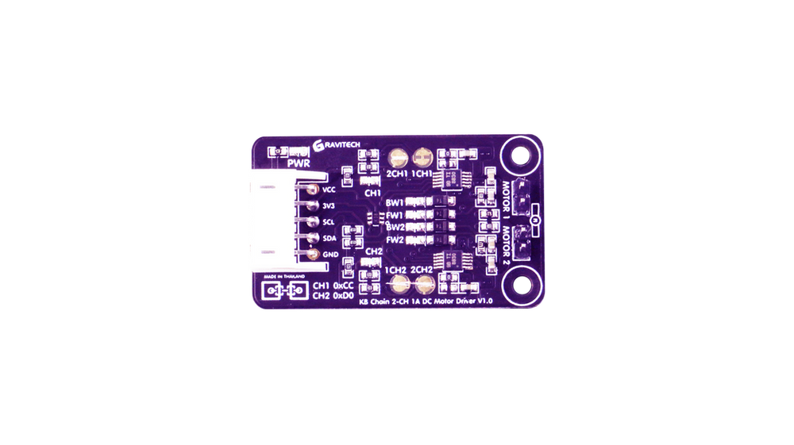
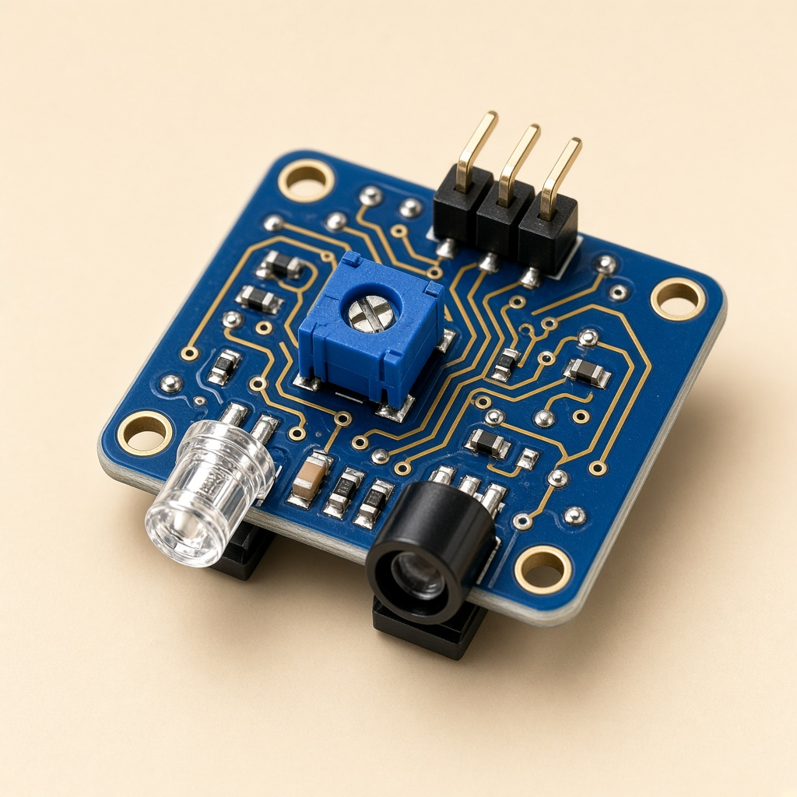
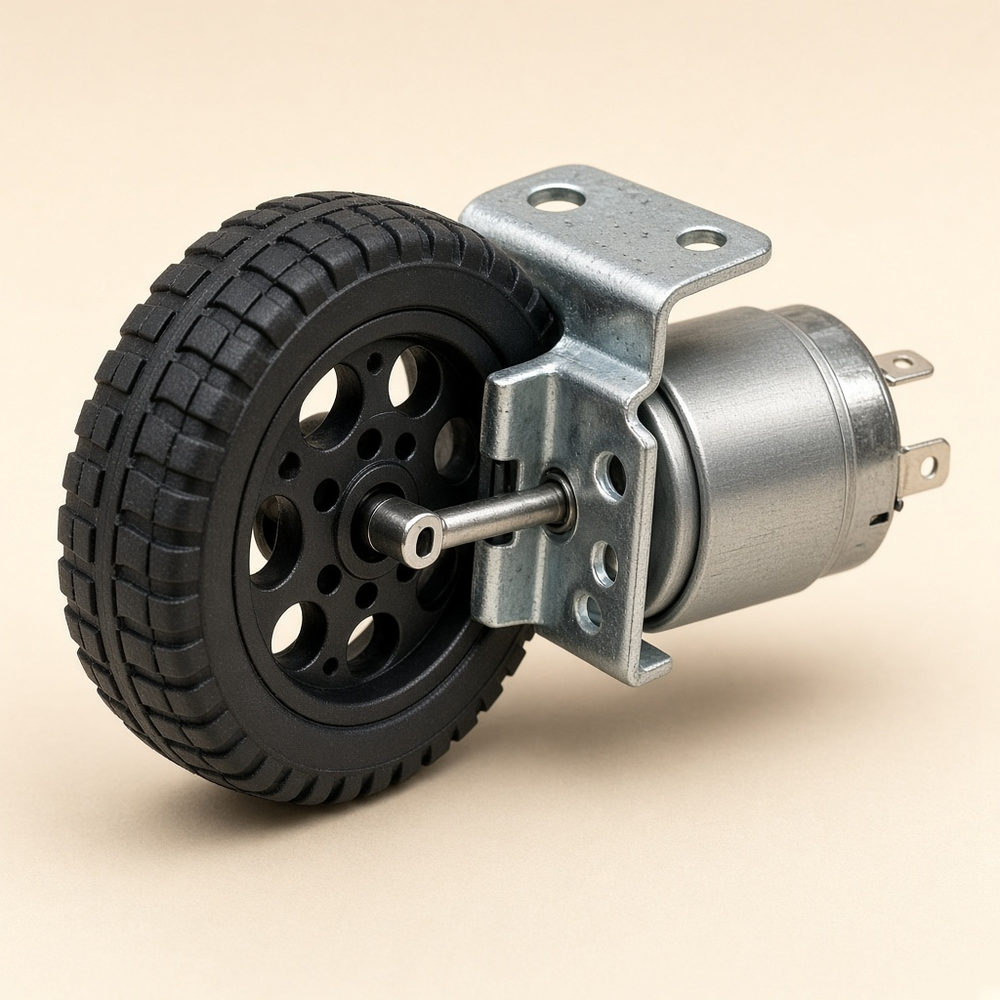
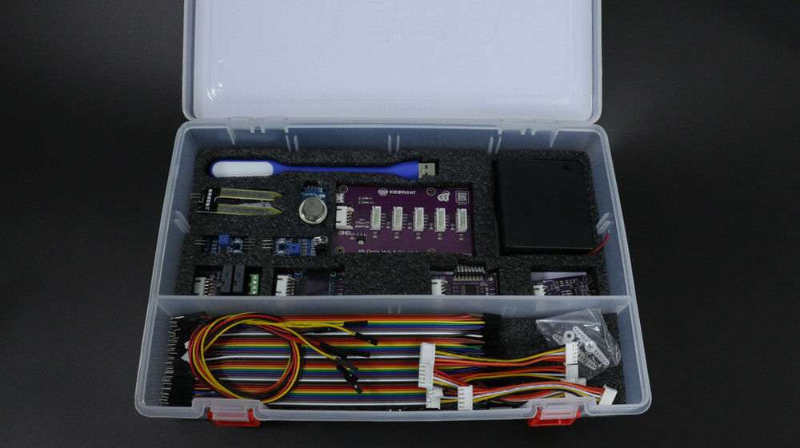
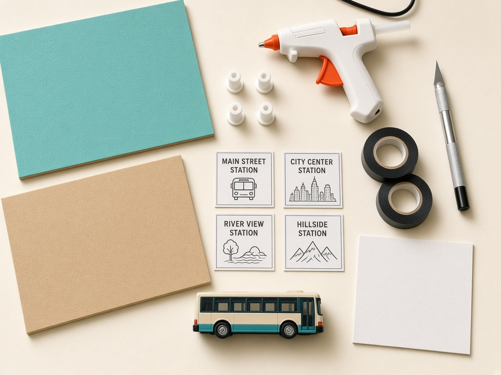

KidBright32
สมองควบคุม ESP32 จอ LED 16×8 ปุ่ม S1/S2 เซนเซอร์ในตัว และพอร์ตขยาย ใช้โปรแกรมบล็อกใน KidBright IDE
หน้าสินค้า
เอกสารประกอบรถต้นแบบบน KidBright สำหรับวันสาธิต ครอบคลุมชิ้นส่วนอุปกรณ์ หลักการออกแบบ logic ควบคุมการเดินรถ และโครงโค้ดสำหรับแปลงเป็นบล็อกใน KidBright IDE
00 ภาพรถต้นแบบ
ภาพแนวคิดล่าสุด: ตัวรถคร่อมถนน 2 เลน ช่องลอดสูง รถเล็กและแนวถนนไปทิศทางเดียวกันใต้ท้องรถ และชานชาลาสูงเสมอพื้นห้องโดยสาร



01 อุปกรณ์และวัสดุ
ชุดควบคุมใช้บอร์ด KidBright เป็นสมองหลัก ส่วนการหยุดที่ป้ายและตัวถังยกสูงเป็นงานออกแบบของโครงงาน ไม่ใช่ฟีเจอร์สำเร็จรูปของชุดตามเส้น







ภาพสินค้าอ้างจากหน้าผู้จัดจำหน่าย KidBright/Gravitech เพื่อการศึกษา · ภาพรถและวัสดุโครงเป็นภาพแนวคิดของโครงงาน · รายละเอียดที่มาใน images/ATTRIBUTION.md · อ้างอิง: NECTEC, KidBright32, KB Robot Line Tracking Kit, Plugins KB Chain
02 หลักการ
รถต้นแบบพิสูจน์สามเรื่องบนเวที ได้แก่ การวิ่งตามเส้น การหยุดเมื่อพบเครื่องหมายป้าย และการมีตัวถังยกสูงให้รถเตี้ยลอดใต้ได้
ชั้นบน: ตัวถังโฟมบอร์ดรูปรถเมล์ │ เสารอง → ช่องลอดใต้ท้อง ชั้นล่าง: ล้อ + มอเตอร์ + IR หันลงพื้น │ สาย KB Chain KidBright32: อ่าน IR + ปุ่ม → สั่งมอเตอร์ สนาม: เทปดำเส้นทาง + เทปคาดขวาง = ป้าย
ดูภาพแยกชั้นและสนามได้ในส่วน ภาพรถ
03 Logic
ใช้เครื่องสถานะสามโหมดหลัก เพื่อแยกการตามเส้น การรอปุ่มที่ป้าย และการคืบออกจากแถบคาด
| สถานะ | เงื่อนไขเข้า | การทำงาน | เงื่อนไขออก |
|---|---|---|---|
| FOLLOW | เริ่มงาน หรือพ้นแถบคาดแล้ว | อ่าน IR แล้ววิ่งตรง/เลี้ยวซ้าย/เลี้ยวขวา | L และ R เป็นดำพร้อมกัน |
| STOP_WAIT | ตรวจพบเทปคาดขวาง | หยุดมอเตอร์ รออธิบายบนเวที | กดปุ่มไปต่อบน KidBright |
| LEAVE_MARK | กดปุ่มหลังจอดป้าย | วิ่งตรงช้า ๆ เพื่อออกจากแถบคาด | พ้นแถบคาด แล้วกลับ FOLLOW |
04 โค้ด
ด้านล่างเป็นซูโดโค้ดสำหรับแปลงเป็นบล็อกใน KidBright IDE ส่วนภาพบล็อกจริงจะใส่เพิ่มเมื่อทีมถ่ายจากหน้าจอ IDE
เมื่อเริ่มต้น:
ตั้ง state = "FOLLOW"
หยุดมอเตอร์
(ทางเลือก) รอ กด Switch1 เพื่อออกตัวครั้งแรก
วนซ้ำตลอด:
อ่าน L, R จากเซนเซอร์ IR
ถ้า state = "FOLLOW":
ถ้า L เป็นดำ และ R เป็นดำ: // เจอเทปคาด = ป้าย
หยุดมอเตอร์ทั้งสอง
(ทางเลือก) แสดง "STOP" บนจอ / มีเสียงสั้น
ตั้ง state = "STOP_WAIT"
ไม่เช่นนั้นถ้า L ขาว และ R ขาว:
วิ่งตรง ความเร็ว V
ไม่เช่นนั้นถ้า L ดำ และ R ขาว:
เลี้ยวซ้าย / ลดความเร็วล้อซ้าย
ไม่เช่นนั้นถ้า L ขาว และ R ดำ:
เลี้ยวขวา / ลดความเร็วล้อขวา
ถ้า state = "STOP_WAIT":
มอเตอร์หยุด
ถ้า กดปุ่มไปต่อ (เช่น Switch2):
ตั้ง state = "LEAVE_MARK"
ถ้า state = "LEAVE_MARK":
วิ่งตรงช้า ๆ ความเร็ว V_slow
จนพ้นแถบคาด (L หรือ R กลับเป็นขาว หรือหน่วง t_clear)
ตั้ง state = "FOLLOW"
ไฟล์ข้อความในรีโป: kidbright/vehicle-control.pseudo.txt
ยังไม่มีภาพหรือไฟล์บล็อกจาก KidBright IDE ในรอบนี้ เมื่อทีมส่งภาพหน้าจอหรือส่งออกโปรเจกต์บล็อกแล้ว จะวางไว้ตรงนี้ และลิงก์ไฟล์ในโฟลเดอร์ kidbright/
05 ลำดับสร้าง
06 ความเสี่ยง
| ความเสี่ยง | การแก้ |
|---|---|
| หยุดกลางเส้นเพราะเส้นหนาหรือคราบดำ | ทำเส้นทางบางสม่ำเสมอ และให้แถบป้ายหนาเฉพาะจุดคาด |
| ไม่หยุดที่ป้าย | ทำแถบคาดกว้างขึ้น และลดความเร็วเข้าป้าย |
| กดปุ่มแล้วยังติดป้ายเดิม | บังคับสถานะ LEAVE_MARK ก่อนกลับ FOLLOW |
| ตัวถังพลิกตอนเลี้ยว | ลดความสูงหรือน้ำหนักชั้นบน และลดความเร็วเลี้ยว |
| มอเตอร์ทำให้บอร์ดรีเซ็ต | แยกแหล่งจ่ายไฟมอเตอร์จากไฟควบคุม |
| กรรมการเข้าใจว่าแอปสั่งรถ | ย้ำตั้งแต่ต้นว่าแอปกับบอร์ดแยกการทำงาน |